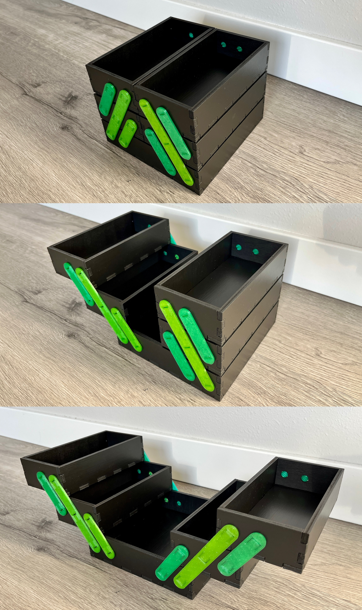
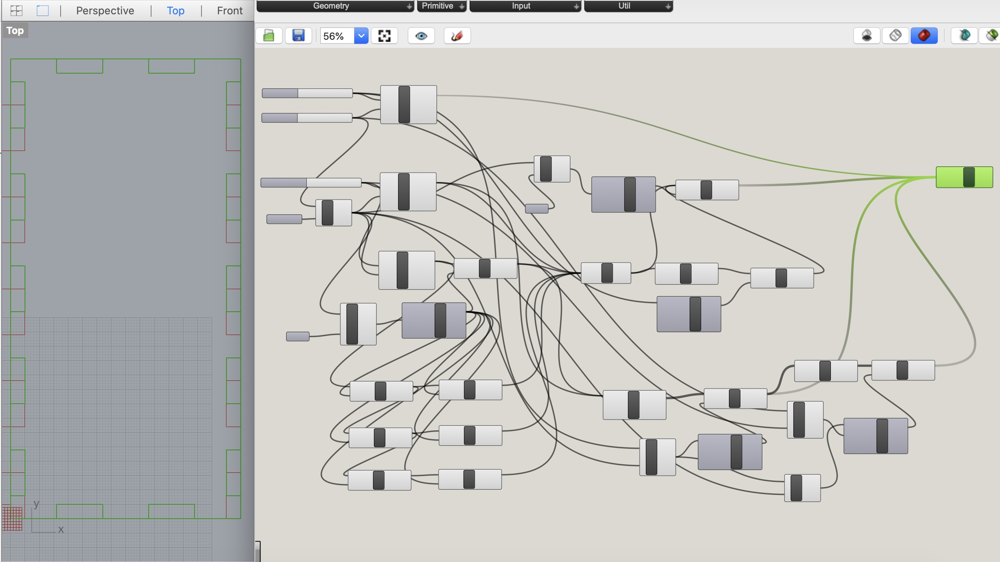
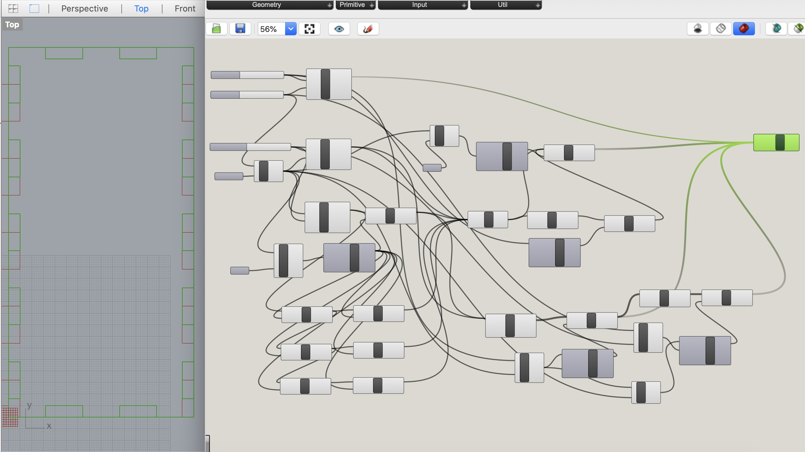
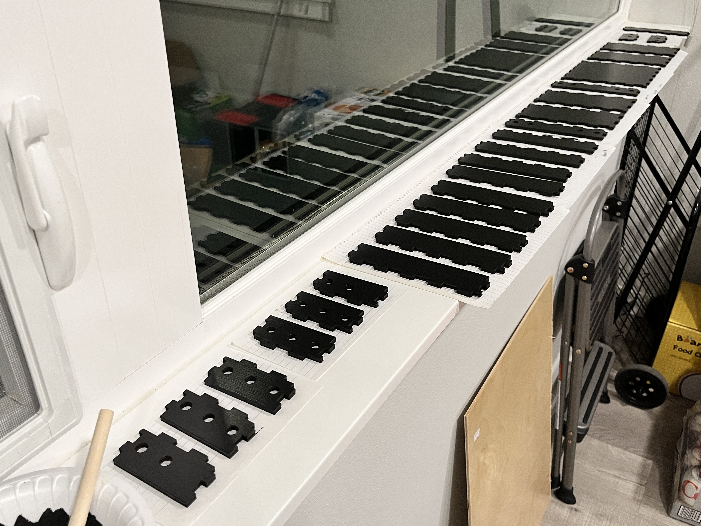

Final Project: Foldable Tool Box
By Sherry Wang
For the course's final project, I made a foldable tool box using Rhino modeling, Grasshopper parametric design, laser cutting, 3d printing, interference fits, and mechanism. I managed to follow the plan and timeline I previously set up in my proposal.
Outcome:
This is what the tool box looks like eventually.

I'm using it to hold my yarns, crochet hooks, and darning needles.
Design:
I got inspired by this link from Thingiverse: Foldable Tool Box. I used its pictures only as a reference since some comments down below said that the dimensions were off and the handles were easily broken.

I started by designing the drawers once I measured the dimensions of the piece of plywood I had. Before going into Rhino, I did some calculations using the Pythagorean Theorem, since there were some constraints and I wanted the deliverable to be precise. Here's a Front-view sketch to better explain:
I wanted the drawers to be press fit, which means that fingers need to be added. Luckily, I was able to refer to previous assignments. I did do a parametric design using Grasshopper. It might be an overkill for this final project, but I'd like to reuse this in the future for other projects, so it was a good bargain. Based on the sketch, I designed two types of drawer bottoms and two types of sides.
 

Once all the components of the drawers were done, I assembled them in Rhino to confirm I got everything correct.
After the drawers were finished, I went to design the connecting handles. In the project proposal, I mentioned that I would 3d print these handles, but was afraid of the pieces breaking when assembling. I was suggested by Nadya and Junchao to use reusable push-in rivets: they would not be as aesthetically pleasing, but definitely more durable. I went on to McMaster but the sizes of these rivets did not fit my plywood perfectly, so I decided to use this as a contingency plan. Meanwhile, I found a much more sturdy handle design on Thingiverse, where the connecting studs were cut in half, and a gap was created so that the handle was able to bend a little bit. I test printed this and it was working.
I then scaled the connecting handle stock files so that the dimensions were right. I also made sure that the height of the studs was larger than the thickness of the plywood, so that it would go through. I then measured the diameters of the stud to get the diameter of the holes on the drawers.
Going back to the drawers, I extruded holes for the connecting handles while double checking if the holes were of the same distance and not too close to the edges.
Manufacture:
The Mill was closed for Thanksgiving, so I first used the 3d printer to get the connecting handles ready. They were of small sizes, so the total of 12 pieces took about a day to print.

As soon as the Mill reopened, I went to laser-cut the drawers. I encountered a really weird malfunction of the laser cutter but fixed it eventually by restarting the machine. I used the setting of speed 2, power 100, and frequency 10 for my plywood. The pieces were great except for the burning marks everywhere. Before dealing with them, I tried putting everything together to check once again the dimensions.
Although ugly, the pieces were all good, so I started removing the burn marks. I searched online and found some techniques. I tried using a brush and some soap, did not work. I tried rubbing alcohol, but was afraid of the plywood getting soaked. I tried a Magic Eraser: it was working a little bit but scraps fell everywhere. I tried sanding but was worried about the gaps being inaccurate afterwards. In the end, I went to Michaels and bought some black paint to cover everything up. I applied two coats on each surface and let them dry for a day.

Assembly:
Once the pieces were dry, I lightly sanded them smooth and assembled the drawers together. I applied glue in the gaps for better security and let them sit dry again for two more days.
I then added the connecting handles to the drawers and voila:
Reflection:
Looking back, there were a few things I learned worth mentioning. First and foremost, I would use masking tapes on plywood before laser cutting it. The removal of burn marks was so painful. Second, I was so glad that I started early, or else I might not have time to paint or glue the drawers. Third, use single-color filament! Those different shades of green were driving me, a perfectionist, crazy.
Source files:
Small drawer bottom Rhino file
Small drawer bottom Grasshopper definition
Large drawer bottom Rhino file
Large drawer bottom Grasshopper definition
Small drawer side Rhino file
Small drawer side Grasshopper definition
Large drawer side Rhino file
Large drawer side Grasshopper definition
Assembled drawers Rhino file
Laser cut Adobe Illustrator file
Stock stl file of small handles from Thingiverse
Small handles Rhino file
Small handles file going into Cura
Small handls file going into the printer
Stock stl file of large handles from Thingiverse
Large handles Rhino file
Large handles file going into Cura
Large handles file going into the printer
Acknowledgements:
@3dfactorytlv from Thingiverse for the tool box idea!
@7ocb from Thingiverse for the adjusted connecting handles!
Mina and Annie for being the Mill laser cutting buddies!
Junchao and Nadya for advice and comments as always!